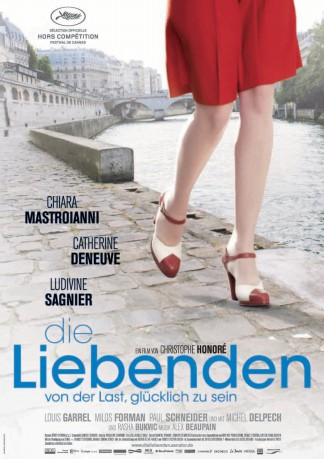

#6154 Die Liebenden - Von der Last, glücklich zu sein
Alternativ: Beloved (Englischer Titel)
 
 IMDB-Wertung: 6.2 / 10
IMDB-Wertung: 6.2 / 10  Metascore: 0
Metascore: 0 
Eine junge Gelegenheitsprostituierte verliebt sich in einen tschechischen Arzt, heiratet ihn und zieht mit ihm nach Prag. Als die Russen einmarschieren, kehrt sie mit ihrem Baby nach Paris zurück und startet eine neue Ehe - was sie nicht hindert, mit dem Ex bei seinen Stippvisiten an der Seine weiterhin das Laken zu teilen. 30 Jahre später verliert sich die gemeinsame Tochter in eine hoffnungslose Verbindung zu einem HIV-positiven Homosexuellen, die in Verzweiflung und Tragik endet.
Jahr: 2011
Dauer: 138 Minuten
FSK: 12
Land: Frankreich Studio: Senator FilmTonspuren:
Untertitel: Deutsch,
Auflösung: 1080p (1920x816) Größe: 14540 MB
Genre: Drama, Liebe, Musical
Regisseur: Christophe Honoré
Drehbuch: Tom Holland
Soundtrack:
Darsteller:
- Chiara Mastroianni als Véra
 Catherine Deneuve als Madeleine
Catherine Deneuve als Madeleine Ludivine Sagnier als Madeleine
Ludivine Sagnier als Madeleine Louis Garrel als Clément
Louis Garrel als Clément- Milos Forman als Jaromil
 Paul Schneider als Henderson
Paul Schneider als Henderson- Kate Moran als Fiancée de Clément
- Zuzana Krónerová als Madame Passer
- Václav Neuzil als Frère de Jaromil
- Pavel Liska als Karel
- Zuzana Onufráková als Mladka
 Kenneth Collard als Musiciens au club
Kenneth Collard als Musiciens au club- Belle Williams als Dancer , uncredited
- Michel Delpech als François Gouriot
 Radivoje Bukvic als Jaromil
Radivoje Bukvic als Jaromil- Omar Ben Sellem als Omar
- Dustin Segura-Suarez als Mathieu
- Guillaume Denaiffe als François Gouriot
- Clara Couste als Véra adolescente
- Francine Beaur als Patronne de Madeleine
- Anaïs Chetoui als Vendeuses
- Amélie Flottat als Vendeuses
- Julia Marty als Vendeuses
- Jean-Charles Clichet als Premier client
- Bonnie Duvauchelle als Véra enfant
- Côme Rérat als Elagueur
- Fabrice Uhel als Jeune médecin
- Robert Liska als Soldats russes
- Frantisek Krizek als Soldats russes
- Vaclav Nic als Jeune homme
- Stéphane Milochevitch als Musiciens au club
- Sébastien Froment als Musiciens au club
- Peter Helmer als Musiciens au club
- Goldy Notay als Nandita
- Cédric Andrieux als Danseurs
- Benoit Causse als Danseurs
- Ashley Chen als Danseurs
- Francesca Mattavelli als Danseurs
- Jaime Roque De La Cruz als Danseurs
- Gavin Brocker als Gérant du club
- Aicha Kossoko als Traductrice à Londres
- Eric Tschaeppeler als Barman à Montréal
- Evgeniya Kosova als Jeune fille slave
- Fabien Hagege als Young Man Smoking , uncredited
Datei: X:\2011(G-M)\Liebenden - Von der Last, glücklich zu sein, Die (2011, FSK12, 1920x816).mkv seit 09.05.2017
Festplatte: HD 2011(G-Z)
 Es gibt insgesamt 100 Filme in der Gruppe '2011(G-M)'
Es gibt insgesamt 100 Filme in der Gruppe '2011(G-M)'